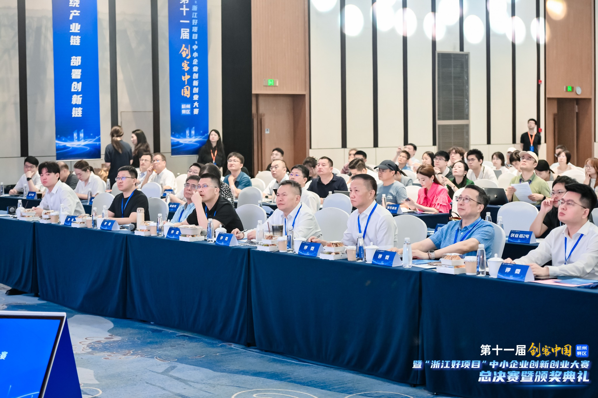
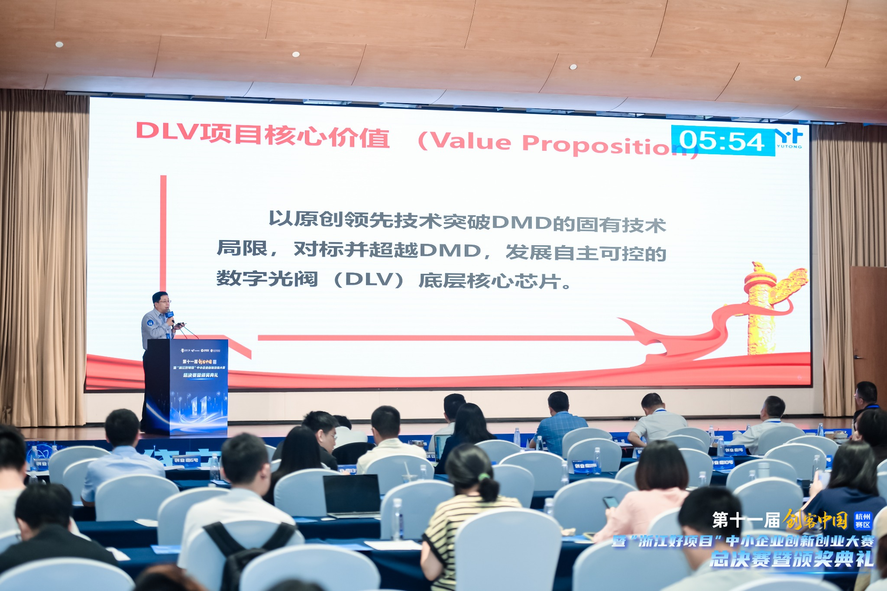
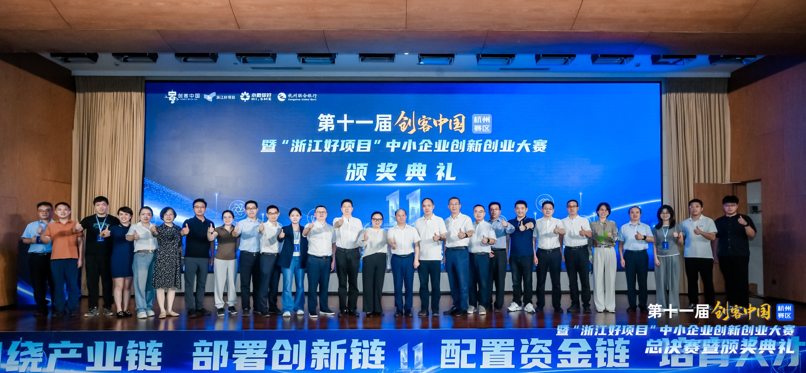

近日，第十一届“创客中国”暨“浙江好项目”中小企业创新创业大赛杭州赛区总决赛圆满收官。 宇瞳（杭州）光电有限公司参赛项目凭借清晰的技术路径、扎实的研发积累和明确的产业化前景， 荣获创业组一等奖。
创新项目同台竞技，宇瞳光电脱颖而出
本届杭州赛区总决赛汇集高端制造、集成电路、人工智能、商业航天等领域的创新项目。 比赛采用路演与答辩相结合的方式，参赛团队围绕技术先进性、市场空间、商业模式和产业化能力接受评审。
面对高强度的现场展示与问答，宇瞳（杭州）光电团队系统阐述了项目的核心价值、 关键技术及落地规划，获得评审认可。


以底层技术创新回应产业需求
宇瞳（杭州）光电聚焦数字光阀底层核心芯片及相关技术研发。 参赛项目围绕“交叉技术芯片”展开，将机械、光学、电学等多学科技术进行融合， 面向微型驱动与精密控制场景，探索在智能终端、航空航天、智能制造、数据中心等领域的应用。
项目已完成关键技术从原理到样机的阶段性验证，并持续推进工程化、可靠性和量产能力建设。 此次获奖，是赛事评审对项目创新性与发展潜力的认可， 也为后续产业协同、资源对接和市场拓展提供了新的契机。

荣誉是肯定，更是新的起点
本次获奖离不开团队在研发、工程、产品和市场等环节的持续协同， 也离不开各级主管部门、赛事组织方、评审专家及合作伙伴的支持。
未来，宇瞳（杭州）光电将继续坚持技术创新与产业需求并重， 稳步推进核心产品研发和工程化落地，以更可靠的产品、更扎实的交付能力服务客户， 为相关产业链自主创新贡献力量。
媒体矩阵
权威平台 · 深度报道 · 创新力量